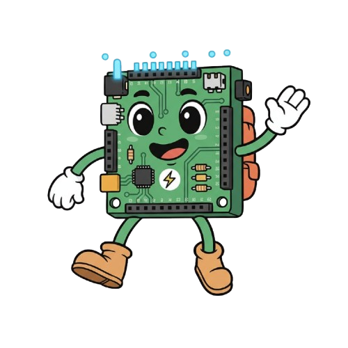
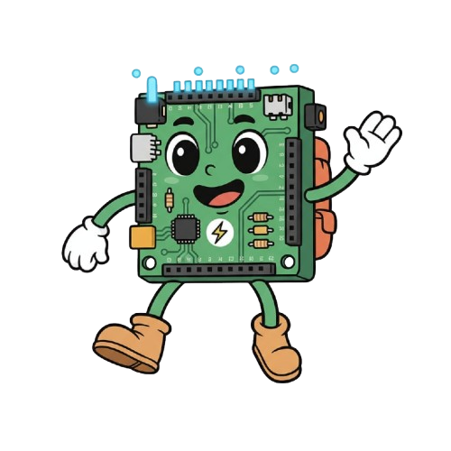

¡Hola! Mucho gusto mi nombre es Arduinito y el dia de hoy vengo a enseñarte como hacer tu propio semaforo con luces LEDS utilizando un arduino. Antes de iniciar ¿Que es un arduino? es una plataforma de hardware y software libre que permite que cualquier persona pueda crear proyectos electronicos interactivos de una manera sencilla. Entre un ejemplo claro tenemos este semaforo con luces LEDS que te estoy presentando a continuacion.